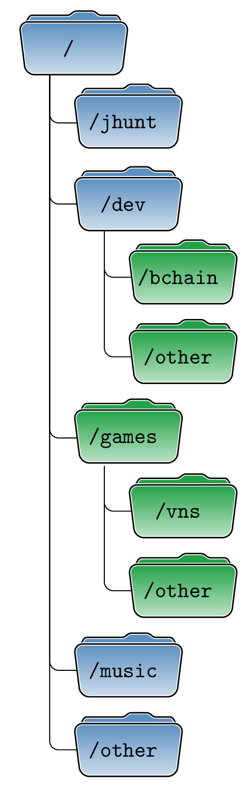

\documentclass[border=10pt]{standalone}
\usepackage{forest}
\definecolor{fblue}{RGB}{92,144,192}
\definecolor{fgreen}{RGB}{34,162,70}
\newcommand\myfolder[2][fblue]{%
\begin{tikzpicture}[overlay]
\begin{scope}[xshift=20pt]
\filldraw[rounded corners=1pt,fill=#1,draw=white,double=black]
(-23pt,10pt) -- ++(3pt,5pt) -- ++(18pt,0pt) -- ++(40:3pt) -- ++(9pt,0pt) -- ++(-40:3pt)
-- (20pt,15pt) -- (23pt,10pt) -- cycle;
\filldraw[rounded corners,draw=white,double=black,top color=#1,bottom color=#1!30]
(-22pt,-12pt) -- ++(44pt,0pt) -- (25pt,12pt) coordinate (topr) -- ++(-50pt,0pt) coordinate (topl) -- cycle;
\end{scope}
\end{tikzpicture}%
\makebox[35pt]{\raisebox{-3pt}{{\ttfamily/#2}}}%
}
\begin{document}
\begin{forest}
for tree={
font=\sffamily,
minimum height=0.75cm,
rounded corners=4pt,
grow'=0,
inner ysep=8pt,
child anchor=west,
parent anchor=south,
anchor=west,
calign=first,
edge={rounded corners},
edge path={
\noexpand\path [draw, \forestoption{edge}]
(!u.south west) +(12.5pt,0) |- (.child anchor)\forestoption{edge label};
},
before typesetting nodes={
if n=1
{insert before={[,phantom,minimum height=18pt]}}
{}
},
fit=band,
s sep=12pt,
before computing xy={l=25pt},
}
[\myfolder{}
[\myfolder{jhunt}]
[\myfolder{dev}
[{\myfolder[fgreen]{bchain}}]
[{\myfolder[fgreen]{other}}]
]
[{\myfolder[fgreen]{games}}
[{\myfolder[fgreen]{vns}}]
[{\myfolder[fgreen]{other}}]
]
[\myfolder{music}]
[\myfolder{other}]
]
\end{forest}
\end{document}Created by David Li